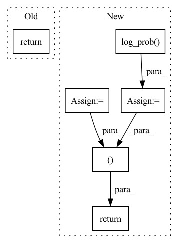

Pattern ID :1998

Before Change
zD = self.decode(z_)
out = torch.sigmoid(zD)
return out, kld
def bound(rce, x, kld, beta):
After Change
// KLD including logdet term
p_z_ = torch.sum(p.log_prob(z_), -1)
q0_z_0 = torch.sum(q0.log_prob(z_0), -1)
log_det = log_det.view(-1)
kld = - torch.sum(p.log_prob(z_), -1) + torch.sum(q0.log_prob(z_0), -1) - log_det.view(-1)
self.test_params = [torch.mean(- torch.sum(p.log_prob(z_), -1)), torch.mean(torch.sum(q0.log_prob(z_0), -1)), torch.mean(- log_det.view(-1)), torch.mean(kld)]
// Decode
z_ = z_.view(z_.size(0), args.latent_size)
zD = self.decode(z_)
out = torch.sigmoid(zD)
return out, p_z_, q0_z_0, log_det
def bound(rce, x, p_z_, q0_z_0, log_det, beta):
In pattern: SUPERPATTERN
Frequency: 3
Non-data size: 6
Instances
Fragment ID: 7412000
Project Name: vincentstimper/normalizing-flows
Commit Name: bd001374eacad94bdea4150d2bfd1876d35d7523
Time: 2020-03-08
Author: 43236963+lukasryll@users.noreply.github.com
File Name: normflow/inf_network.py
M Class Name: FlowVAE
N Class Name: FlowVAE
M Method Name: forward(2)
N Method Name: forward(2)
M Parent Class: nn.Module
N Parent Class: nn.Module
M File Name: normflow/inf_network.py
N File Name: normflow/inf_network.py
M Start Line: 84
M End Line: 92
N Start Line: 73
N End Line: 95
'>
Before Change
a = t.relu(self.fc1(state))
a = t.relu(self.fc2(a))
a = t.tanh(self.fc3(a)) * self.action_range
return a
class ActorDiscreet(nn.Module):
After Change
act = (action
if action is not None
else dist.sample())
act_entropy = dist.entropy()
act_log_prob = dist.log_prob(act)
return act, act_log_prob, act_entropy
class Critic(nn.Module):
def __init__(self, state_dim, action_dim):
'>
Fragment ID: 7412003
Project Name: iffix/machin
Commit Name: 5b8a19f67832501f89f0861dca751b9e6978e63d
Time: 2020-06-16
Author: hanhanmumuqq@163.com
File Name: test/frame/algorithms/test_sac.py
M Class Name: Actor
N Class Name: Actor
M Method Name: forward(3)
N Method Name: forward(2)
M Parent Class: nn.Module
N Parent Class: nn.Module
M File Name: test/frame/algorithms/test_sac.py
N File Name: test/frame/algorithms/test_sac.py
M Start Line: 30
M End Line: 31
N Start Line: 30
N End Line: 41
'>
Before Change
def forward(self, state):
a = F.relu(self.l1(state))
a = F.relu(self.l2(a))
return self.max_action * torch.tanh(self.l3(a))
class Critic(nn.Module):
After Change
a_distribution = Normal(mu, sigma)
action = a_distribution.rsample()
logp_pi = a_distribution.log_prob(action).sum(axis=-1)
logp_pi -= (2 * (np.log(2) - action - F.softplus(-2 * action))).sum(axis=1)
logp_pi = torch.unsqueeze(logp_pi, dim=1)
action = self.max_action * torch.tanh(action)
mu = torch.tanh(mu) * self.max_action
return action, logp_pi, mu
def get_log_density(self, state, action):
a = F.relu(self.fc1(state))
a = F.relu(self.fc2(a))
'>
Fragment ID: 7412005
Project Name: ryanxhr/dwbc
Commit Name: 7bf8e90c7bbf238b9a80c6c033844d37a17e898e
Time: 2022-06-24
Author: xuhaoran8@jd.com
File Name: algos/DWBC.py
M Class Name: Actor
N Class Name: Actor
M Method Name: forward(2)
N Method Name: forward(2)
M Parent Class: nn.Module
N Parent Class: nn.Module
M File Name: algos/DWBC.py
N File Name: algos/DWBC.py
M Start Line: 22
M End Line: 23
N Start Line: 36
N End Line: 52